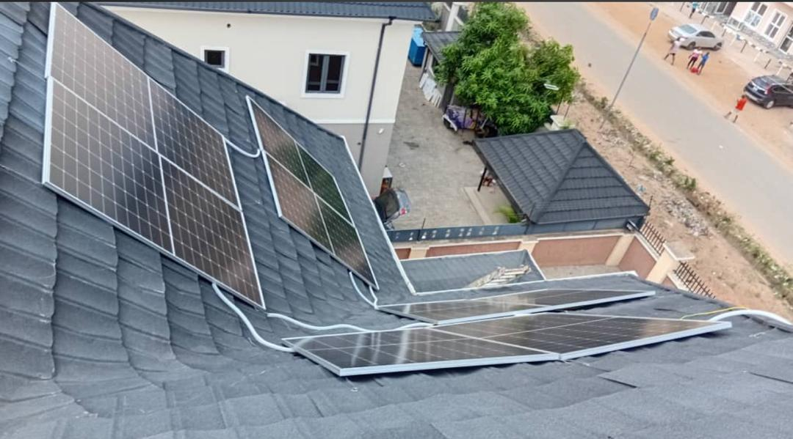

THYLAN SERVICES NIGERIA
Powering Solutions, Simplifying Lives
Powering Solutions, Simplifying Lives
Engineering • ICT • Security • Software Solutions

We design, supply, install and maintain residential and commercial solar power systems, batteries and inverters.
HD/IP surveillance cameras, remote monitoring, access control and complete security solutions.
Structured cabling, enterprise networking, Wi-Fi deployment and server configuration.
School, Hospital, Hotel, Pharmacy, Restaurant, Supermarket and Business Management Systems.
Responsive websites, Android & iOS applications, e-commerce and custom business solutions.
Digital transformation, IT advisory services, maintenance, training and technical support.